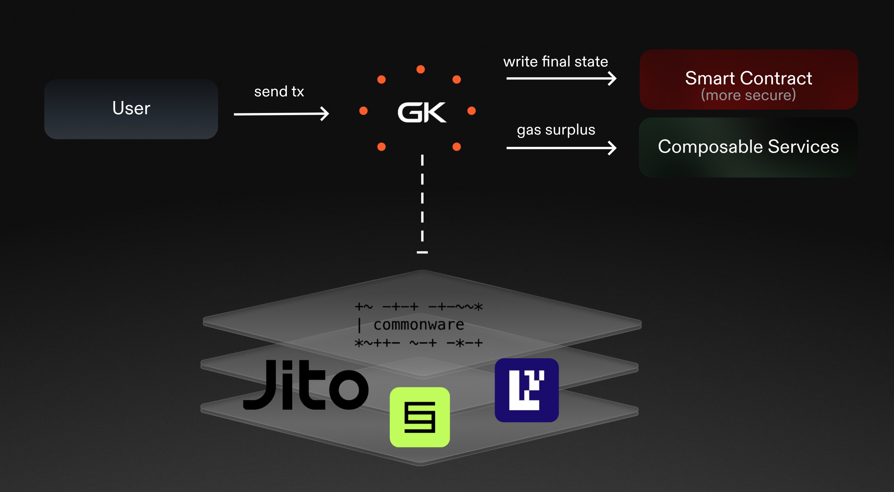

01Step 01 · Restake
Vaults weight the committee
Jito vaultdelegation
OP·0
OP·1
APK ✓
Operators register BN254 keys with the NCN; vault delegations become stake weights in a generation-tagged snapshot with a running aggregate key.
02Step 02 · Simulate
The committee certifies a digest
"tell me…"
StoreEventsha256
✓ bit-exact
The producer runs the EVM-reference sim (revm, UnboundedV1) of GasKillerLLM; every honest operator recomputes the identical payload digest and co-signs one BLS certificate.
03Step 03 · Settle
One instruction on Solana
→
◎ ✓
The settle ix verifies the certificate against ≥66.67% of snapshot stake, writes one commitment root, emits self-CPI events; story bytes land in an sha256-bound buffer account.
On-chain history
loading config…
Bisection proof — disputing a billion-gas inference with log₂(n) hashes
Every Gas Killer result is signed by a quorum, and every honest operator computes a
bit-identical integer inference. If a signed result is ever wrong, a challenger
doesn't re-execute billions of gas of simulation on-chain — that's impossible. Instead
the execution is checkpointed at every generated token (the commitment chain the
settlement already maintains — on Solana, the per-transition digest chain in the state
PDA), and challenger + defender bisect: compare the midpoint checkpoint, recurse
into the half that disagrees, and after ⌈log₂ n⌉ rounds isolate one token's forward
pass — small enough to re-execute off-chain in the SP1 slashing guest. The fraud is
proven at the first divergent step; the dishonest party is slashed. This lab simulates
the whole game, fully in your browser. Numbers quote the EVM reference
implementation (gas of the pinned simulation) — the dispute game itself is
chain-agnostic: on Solana each round is one checkpoint comparison, and slashing
execution is roadmap (pending Jito's upstream
Slash instruction).
Execution trace — one segment per generated token
token 0 (prompt committed)
—
total execution gas (EVM reference, off-chain)
—
disputed window (segments)
—
bisection rounds used / max
—
work to prove the culprit segment
—
vs naive full re-execution
Dispute transcript
How this maps to the Jito NCN port
Checkpoints are free. The consumer's commitment root is already a running
digest chain — every settle binds
The pinned environment is part of the claim. The state PDA carries
The endgame is tiny. One stories260K token ≈ 44M gas in the EVM reference sim — exactly the workload the SP1 guest re-executes off-chain to produce a fraud proof. On Solana, slashing execution is roadmap: slasher tickets are the Layer-2 deliverable, pending Jito's upstream
Honest defenders can't lose. Try the honest mode: every midpoint matches, the challenger's window never isolates a divergence, and the challenge bond is forfeited instead.
transition_index, the state PDA and
the new root into sha256(borsh(SettlementPayload)); emitting the
per-token intermediate roots during simulation costs the operators nothing extra —
they're deterministic integer states.The pinned environment is part of the claim. The state PDA carries
sim_profile_id and env_commitment — both parties bisect
over the same pinned simulation profile and weight manifest. A defender who
simulated with different weights diverges at segment 0 and loses immediately:
availability games can't forge the manifest.The endgame is tiny. One stories260K token ≈ 44M gas in the EVM reference sim — exactly the workload the SP1 guest re-executes off-chain to produce a fraud proof. On Solana, slashing execution is roadmap: slasher tickets are the Layer-2 deliverable, pending Jito's upstream
Slash instruction.Honest defenders can't lose. Try the honest mode: every midpoint matches, the challenger's window never isolates a divergence, and the challenge bond is forfeited instead.
The pipeline, ported
Jitorestaking
NCNsnapshot
BLScertificate
settleinstruction
storybuffer
The Solana port replaces the
settlement + registry layer only: EigenLayer restaking → Jito (re)staking,
BLSSignatureChecker → the NCN's stateless VerifyCertificate path,
verifyAndUpdate → one settle instruction, event logs →
self-CPI events + sha256-bound buffer accounts.
The same pipeline every Gas Killer consumer
uses — user tx → GK operator layer → settled state + gas surplus, riding
commonware-coordinated restaking (on Solana: Jito). This demo just makes the
“execution” box a 260K-parameter transformer. More at
gaskiller.xyz.